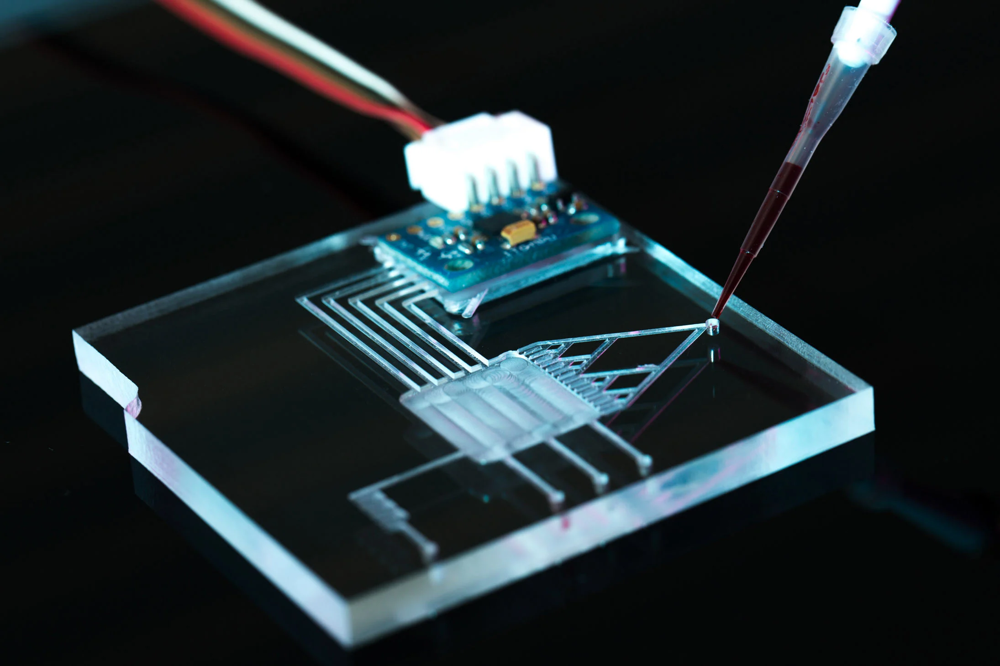

Mejora tus procesos con un control analítico propio, sin depender de un laboratorio centralizado.
Conversemos sobre tu casoChips intercambiables. Un mismo sistema, múltiples analitos y aplicaciones.
El análisis se hace donde ocurre el proceso, no donde está el laboratorio.
Resultados en el sitio, sin esperar días por un tercero.
Se toma directamente en el punto de proceso, terreno, planta o punto de atención.
El chip microfluídico intercambiable procesa la muestra según el analito buscado.
Lectura óptica y sensórica embebida entrega el resultado en el sitio.
Un chip del tamaño de una tarjeta reemplaza una sala de laboratorio completa. El análisis se hace donde ocurre el proceso no en un laboratorio externo y en minutos, no en días.
Ver aplicaciones →µpontis integra chips microfluídicos, control de fluidos (válvulas, bombas de precisión, filtros) y sensórica embebida en una sola plataforma. No es un equipo diseñado para un solo uso: es una arquitectura que se adapta al analito, la matriz de muestra y el contexto de cada industria.
Un mismo sistema base cambia de chip según lo que se necesite medir. La inversión en plataforma no se pierde cuando cambia el caso de uso — se extiende a nuevas aplicaciones sin rediseñar el sistema completo.
Ocho aplicaciones listas para ofrecer hoy, construidas sobre nuestras seis capacidades técnicas. Tocá un área para resaltar sus aplicaciones o una tarjeta para ver el detalle.
UNIVERSIDADES · I+D
Chips custom MOQ1 + equipos + training. Informe de 13 laboratorios como base comercial.
ALIMENTOS · QUÍMICA
Placas de integración, firmware y control de fluidos custom, llave en mano.
AGRO · FOOD QC · IVD
Ensayo completo de punta a punta: dosificación, reacción controlada, lectura y reporte.
UNIVERSIDADES · FARMA
Gotas monodispersas con bombeo de precisión (<1 %) sobre chips flow-focusing.
ALIMENTOS · QC PLANTA
Homogeneizar y diluir muestras difíciles (jugos, salsas, miel) con resultado repetible.
ALIMENTOS · INDUSTRIA
Verificación de limpieza por bioluminiscencia en 10–20 s (HACCP / GFSI).
AGRO · BODEGAS · FOOD QC
Detección POCT de aflatoxinas (granos) y ocratoxina A (vino), con evolución a cuantitativo vía FIA.
SALUD · AGRO · FOOD SAFETY
Test cualitativos con reactivos estables a 25–30 °C y lectura portátil.
Cuéntanos tu problema, proceso, producto y evaluamos tu propuesta.
Gracias por escribirnos. Un miembro del equipo revisará tu caso y te contactará directamente — no agendamos demos automáticas.